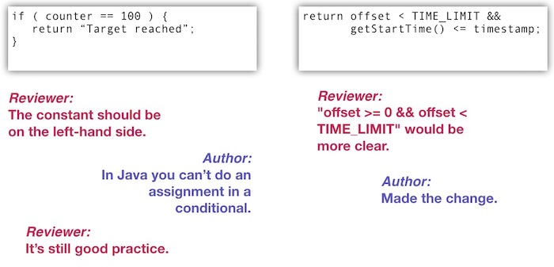
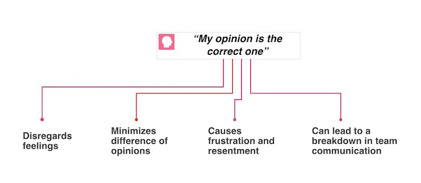
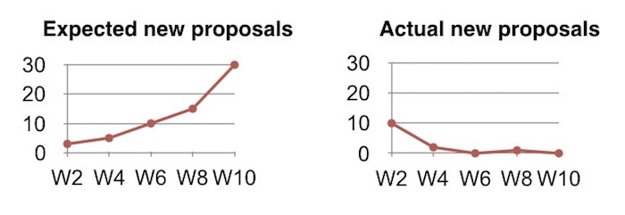

Creating Simple and Effective Guidelines for Code Reviews
The following is a blog post that was written from a speech I gave about how to set the ground rules for code reviews.
Following New Relic’s Project Upscale—an innovative reorganization intended to make our development teams more autonomous—the engineering organization formed several new teams, one of which was the New Relic Database (NRDB) team. As the name implies, the NRDB team is responsible for the development of our events database, which powers the New Relic Insights tool as well as several other products.
When we formed the NRDB team, it included several senior-level software engineers. This was a highly skilled and very passionate group of developers reviewing one another’s pull requests.
When passion turns toxic
Being passionate about your work is one of New Relic’s core values. In this case, however, we may have experienced too much of a good thing: our code reviews soon became collision points, and we increasingly turned to passive-aggressive communications to settle our differences.

In the example on the left, the reviewer left the PR in an in-between state. They didn’t explicitly reject it, but they didn’t approve it either. In the example on the right, the reviewer made a highly subjective request, and the author just made the change, but from their tone you can kind of guess that they didn’t appreciate the feedback.
As a result, the NRDB team’s developers grew increasingly frustrated, team trust eroded, and several members (myself included) contemplated switching to other teams. We were in trouble.
Refining our process—and saving the team
We decided as a team to take a step back; we resolved to figure out what was going on, why it was happening, and what we could do to fix it. Since most of our frustration was tied to our code reviews, we started by asking a simple question: how could we give one another more effective and constructive feedback?
We answered the question by developing four basic guidelines for code reviews. We think you’ll find them useful, too, but before we spell them out, we want to share the full story behind what happened to divide our team and what was really as stake for us.
A flawed approach to the code review process
Many of our challenges were related to the differences between objective and subjective feedback in our code reviews. Being able to differentiate clearly between these two types of feedback can be critical to the success of a code review, and to the effectiveness of a development team. In too many cases, we weren’t handling subjective feedback in a constructive manner—in fact, just the opposite was true.
We probably aren’t the only ones who struggle with this issue. Many developers are trained from the start to downplay differences between the two types of feedback. In fact, students in academic software engineering programs rarely learn how to give or receive critical feedback of any sort.
When I went to school, this certainly was the case. The computer science curriculum focused on algorithm analysis, data modeling, and problem solving. Our instructors treated code review as a functional quality-assurance task; they rarely presented it as a creative process. Code review feedback tended to be straightforward: The code either worked, or it didn’t. Because of this kind of training—or rather, lack of training— many software engineers still treat all aspects of code reviews as completely objective activities.
It’s useful to contrast this approach with the one employed in an academic creative writing program. There, instructors conduct workshops that include training on how to give critical feedback. Creative writing instructors understand that giving and receiving critical feedback is an essential part of the creative process. They also understand, however, that critical feedback can be harmful and create resentment unless it is handled properly. The goal is to provide feedback in a positive and constructive way that helps to hone a writer’s ideas, enhance their creativity, and leave both parties enriched by the process.
The struggle over subjectivity
Many facets of a code review, however, are not straightforward. In particular, there are issues that demand subjective assessments for which there are no “correct” answers. This is where the rigid emphasis on code review as a totally objective activity, and the failure to consider the creative nature of software development, can become a problem.
Many elements of a modern code review process are now fully automated. Editors and IDEs will find syntax errors, evaluate Boolean logic, and warn about infinite loops. As a result, the bugs that survive are much harder to find, especially when you’re at the end of the process and are just looking at a code snippet with limited context.
Editors and IDEs, however, can’t detect—or prevent developers from focusing on—subjective issues such as confusing method names, questionable style preferences, and bad variable formatting. And when we dislike and disagree with what we find in such cases, we often forget that these “flaws” are subjective matters of opinion—not objective matters of fact.
This approach also makes it easy to forget that a debate over subjective issues during a code review can get emotional and heated very quickly.

Some teams try to regulate this problem out of existence by creating style guides that make objective rules out of subjective preferences. This approach rarely succeeds: software development is full of subjective choices, and there is no way to cover every subjective choice that developers may face in the course of project.
When a team lacks a clear communication channel for subjective feedback, the problem gets even worse. Reviewers may mix their subjective and objective comments without acknowledging the differences; here too, the process can end in resentment, frustration, and a breakdown in team communication.
Our four guidelines for code reviews
This brings us back to the guidelines we developed to govern the subjective elements of the NRDB team’s code review process.
First, as a preliminary to our four guidelines, we agreed to define who is ultimately responsible for the correct execution of any code changes. This was important to us because in a subjective debate, the opinions of the person who has the ultimate responsibility—in other words, verifying code execution— should carry the most weight. As a result, we decided that “The author of the code change is responsible for the correct execution of the change.”
This may seem obvious, but not all teams work that way. Some teams, for example, treat the review process as a QA process where the reviewer is ultimately responsible for verifying correct execution.
We found that subjective comments were most often presented as objective feedback at the pull request stage of the process. As a result, this is where we focused our code review guidelines.
In creating these rules, we laid a foundation for team members to clearly identify what a code reviewer should look for, and how to give both subjective and objective feedback. Here are the guidelines:
-
The reviewer should identify errors that will cause an issue in production. It’s a code review, after all, so the reviewer should identify missing semicolons, unending loops, or missing error handling. Reviewers aren’t responsible for finding all such errors (that’s still the responsibility of the author), but they should be on the lookout for obvious issues that will break the system if they’re are deployed into production. Such issues are a valid reason to block the pull request.
-
The reviewer should verify that the stated goal of the code change aligns with the changes being made. If the author submits a pull request that says they’re making changes to the networking code of a service, reviewers should expect that all of the changes are in and around the service’s networking code. This seems obvious, but it’s no secret that developers have a tendency to try to pack in multiple changes in such cases. This isn’t even necessarily a wrong practice, as long as the changes are mostly co-located. When you align a code change to its stated goal, however, you make it easier to determine if the pull request potentially submits any new bugs. Here, too, we agreed that failing to align the code change with its stated goal would justify blocking the pull request.
-
The reviewer should verify that any changes align with the team’s coding standards. I’ll cover this more in a bit, but as an example, if the team has decided that all variables must use camel case, and the reviewer finds a variable that does not use camel case, they should block the pull request.
-
The reviewer should look for anything they personally disagree with. This guideline addresses any comment which the first three rules do not cover. We want reviewers to give feedback, even if it’s not covered by the first three rules. We didn’t want our guidelines to suppress feedback, which is essential for how we learn from one another. Because these comments are clearly subjective, however, we agreed that they do not justify blocking the pull request.
To remove all confusion, we ask that reviewers specifically call out their comments as either blocking or non-blocking; and to add those comments as tags in their reviews. For example:
Objective comments
- “Blocking: You are missing a semicolon.”
- “Blocking: This loop never ends.”
- “Blocking: You are missing some error handling here”
Subjective comments
- “Non-blocking: Your method name is not clear enough.”
- “Non-blocking: You should put the open curly brace on the line above.”
- “Non-blocking: You should use camel case for your variable here and not snake case.”
Working within our code review guidelines
As we adopted these guidelines, the team had the most difficulty with the fourth one. Adopting this meant we had to accept two conditions:
-
The code our team produced did not need to be uniform. This meant overcoming a trend in our industry that says you should strive to remove all fingerprints from your code that identifies who wrote what part. We found the ROI on following this trend was pretty low, and trying to do so just led us back into the same subjective debate: If a developer writes code in a manner slightly different than their peer would, does that mean the code is incorrect? Clearly, we decided, that wasn’t the objective case.
-
If a reviewer adds non-blocking feedback, the author should take the time to consider it. Early on, some team members were concerned that authors would simply ignore all non-blocking comments, as their code was no longer blocked by subjective feedback. Our solution, then, was to reiterate that “we trust our teammates.” If, as reviewers, we took the time to enter a comment, we trusted that the author would take the time to read and consider it.
These both were contentious points, and the team spent a long time debating them. But ultimately, we found that the only way to work through these issues successfully is to live with the guidelines and give them a chance.
Sponsoring a coding standard
So, what are a reviewer’s options if they see something which they passionately feel shouldn’t be in the code, especially if their concern isn’t an “objective” rule violation they can block on? For such concerns, we agreed that a reviewer could choose to sponsor an addition to the team’s coding standards.
Every two weeks, we hold a retrospective meeting where team members are welcome to suggest changes or additions to our coding standards. There are two restrictions to this activity:
-
We cannot describe coding standards in subjective language. For example, a sponsor can’t say, “variables must not be ambiguous,” as ambiguity is subjective. But, the sponsor could add a standard that states, “variables must use Hungarian notation,” as this is objective and easily enforceable.
-
If you sponsor a coding standard, you must support it. The sponsor must provide documentation and training as needed. If there was a plugin or other tool the team needs to installed, the sponsor is responsible for supporting it. This restriction ensures the sponsor is passionate about anything they want to add to the team’s coding standards.
Finding respect and compromise in code reviews
After agreeing to these guidelines, we cleared all our existing coding standards and started over. For the first few weeks it was hard to break old habits, and we had to remind several team members to add the blocking and non-blocking tags during their pull request reviews. But once we got rolling with the new guidelines, we saw a number of successes.
First, by forcing reviewers to clearly identify those comments that were subjective, we noticed a change in how reviewers phrased their comments.Reviewers can no longer demand changes that meet their preferences; instead, they must request changes politely, and explain why they’re requesting the change. When we provide more explanation and context in this manner we create an environment that makes it easier for teammates to learn from one another. Plus, asking for changes, rather than demanding them, shows respect and acknowledges that the code’s author has valid feelings about their work, as well.
We also noticed that when a reviewer did write a non-blocking comment asking for a change, the author typically made the requested change or came up with a compromise—even though the author had the option of ignoring the comment. This demonstrates why asking for changes, rather than demanding them, builds stronger teams: the author feels less resentful, and the reviewer feels that the author genuinely appreciated their feedback.
We’ve identified a few other terrific benefits from this process. By limiting the scope of what qualifies as a blocking comment, for example, we reduced the time it took us to approve and merge changes, which resulted in greater overall project velocity. We have also reduced the time required to onboard new new team members and to get them up to speed with our code review process.
We have also updated our training materials to reflect our new code review process: We distribute one page that documents our guidelines, and another page that documents our coding standards. New team members now know exactly what they should be looking for and how best to communicate their suggestions.
We also expected the number of coding standards to increase greatly as reviewers sponsored new standards for items they could no longer block on. At the beginning, we did adopt several new coding standards, but after an initial burst, the number of new agreements fell off significantly. We concluded that since reviewers felt that authors were taking into consideration their subjective feedback, they did not feel as motivated to “convert” them to objective constraints based on their point of view.

These guidelines aid in team autonomy
The most important thing about these guidelines is that they support team autonomy; in no way do these guidelines dictate which coding standards teams should adopt. Teams are free to choose their own style guides, and they decide how strict they want to to be. These guidelines simply explain how to define coding standards and how reviewers should look for and give feedback.
We have come to appreciate the role that a strong and effective feedback process can have on building team morale, increasing team trust and communication, and improving development velocity. We implemented guidelines to strengthen the feedback process and to address issues that put the process at risk—and so far, I think we’re getting exactly what we hoped to get from these improvements.
Joshua Gerth
Engineering Manager
Systems Architect
My research interests include big data, language parsing, ray tracing and blockchain.